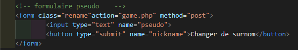
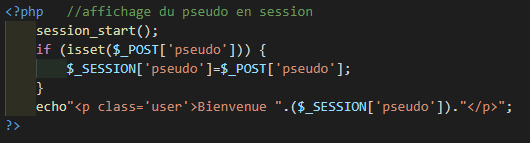
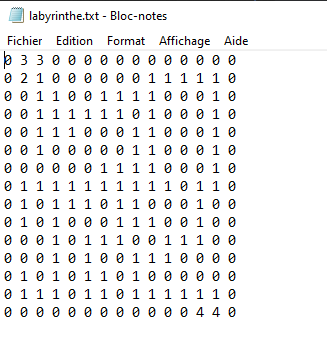
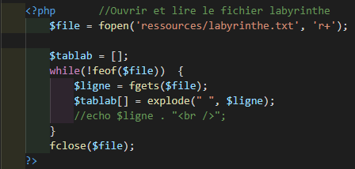
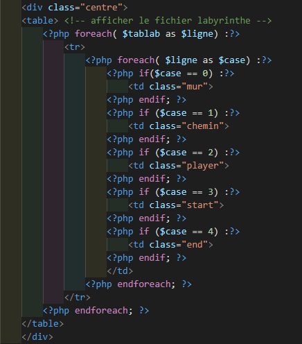
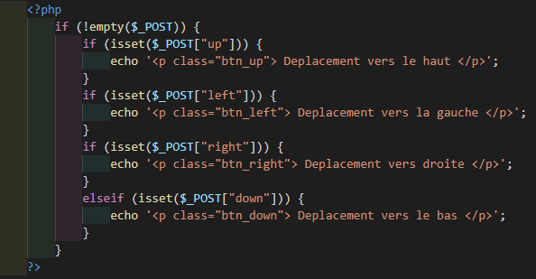
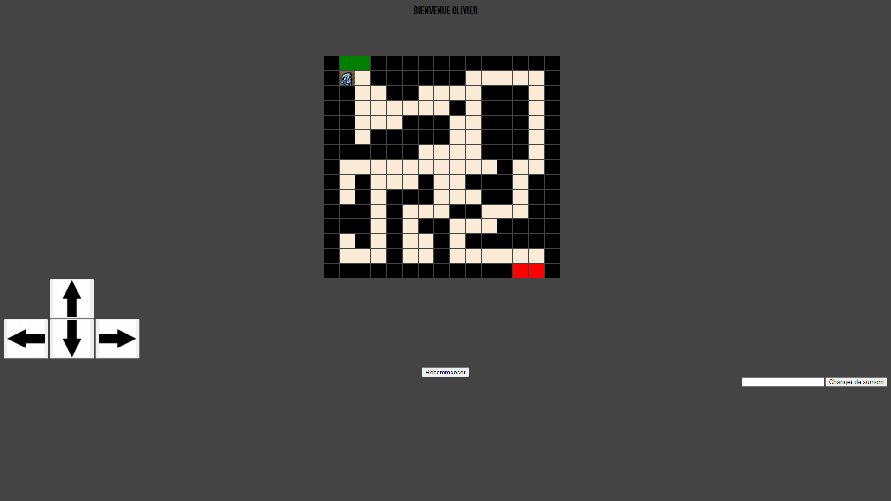

Ce projet à était réalisé durant les cours à Campus Academy. C'est un projet fait principalement de HTML et de PHP.
Je devais réalisé un jeu du labyrinthe, réalisable évidemment, à l'aide de fonction PHP.
Ce projet demandait tout de même plusieurs fonction différentes, autres que le système de déplacement basique (haut/bas/gauche/droite), comme par exemple une fonction PHP qui récupére le pseudo écrit dans un formulaire HTML
code HTML :
code PHP :

Il y'avait aussi une fonction PHP qui servait à l'affichage du labyrinthe, car le labyrinthe est stocké dans un fichier txt.
Une fonction PHP va donc venir ouvrir le fichier puis le lire. En le mélangeant à du code HTML il va se remplir sous forme de tableau puis on va rappeler ce tableau HTML dans du code CSS afin de le styliser.
Le labyrinthe dans le fichier txt :
La fonction PHP pour ouvrir et lire le fichier :
La partie HTML/PHP pour afficher le labyrinthe :
Malheureusement je n'ai jamais eu le temps de finir ce projet dans le temps impartie, ce qui fait que les boutons de déplacement ne sont pas fonctionnel du tout, ils renvoyent simplement une phrase pour dire que l'on a bien appuyé dessus.
La fonction PHP de test pour les boutons de déplacements :
Tout cela pour cet affichage final:
